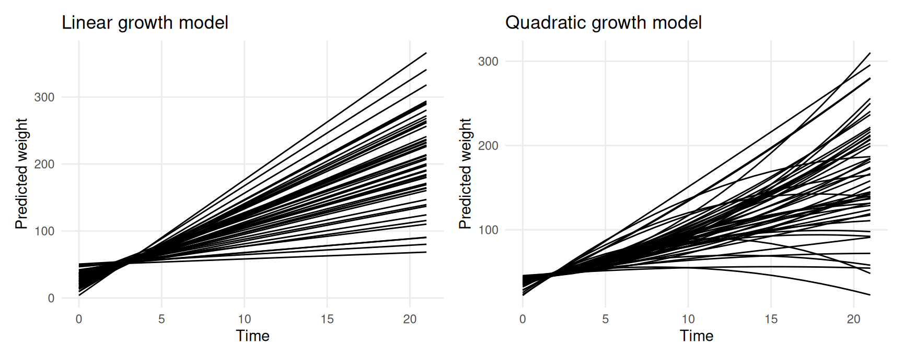
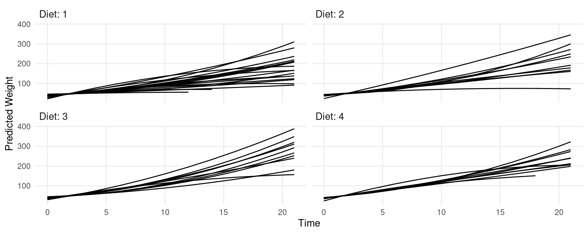
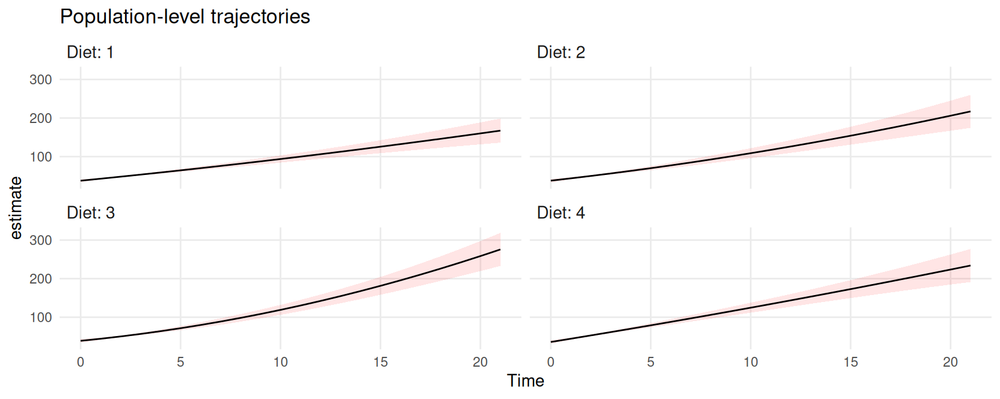

library(lme4)
library(tidyverse)
library(patchwork)
library(marginaleffects)
## unconditional linear growth model
fit1 <- lmer(
weight ~ 1 + Time + (1 + Time | Chick),
data = ChickWeight)
## conditional quadratic growth model
fit2 <- lmer(
weight ~ 1 + Time + I(Time^2) + Diet + Time:Diet + I(Time^2):Diet + (1 + Time + I(Time^2) | Chick),
data = ChickWeight)Mixed Effects
This vignette replicates some of the analyses in this excellent blog post by Solomon Kurz: Use emmeans() to include 95% CIs around your lme4-based fitted lines
Load libraries and fit two models of chick weights:
Unit-level predictions
Predict weight of each chick over time:
pred1 <- predictions(fit1,
newdata = datagrid(Chick = ChickWeight$Chick,
Time = 0:21))
p1 <- ggplot(pred1, aes(Time, estimate, level = Chick)) +
geom_line() +
labs(y = "Predicted weight", x = "Time", title = "Linear growth model")
pred2 <- predictions(fit2,
newdata = datagrid(Chick = ChickWeight$Chick,
Time = 0:21))
p2 <- ggplot(pred2, aes(Time, estimate, level = Chick)) +
geom_line() +
labs(y = "Predicted weight", x = "Time", title = "Quadratic growth model")
p1 + p2
Predictions for each chick, in the 4 counterfactual worlds with different values for the Diet variable:
pred <- predictions(fit2)
ggplot(pred, aes(Time, estimate, level = Chick)) +
geom_line() +
ylab("Predicted Weight") +
facet_wrap(~ Diet, labeller = label_both)
Population-level predictions
To make population-level predictions, we set the Chick variable to NA, and set re.form=NA. This last argument is offered by the lme4::predict function which is used behind the scenes to compute predictions:
pred <- predictions(
fit2,
newdata = datagrid(Chick = NA,
Diet = 1:4,
Time = 0:21),
re.form = NA)
ggplot(pred, aes(x = Time, y = estimate, ymin = conf.low, ymax = conf.high)) +
geom_ribbon(alpha = .1, fill = "red") +
geom_line() +
facet_wrap(~ Diet, labeller = label_both) +
labs(title = "Population-level trajectories")